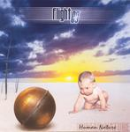

| Artist: | Flight 09 |
| Title: | Human Nature |
| Label: | Mals 046 |
| Length(s): | 49 minutes |
| Year(s) of release: | 2004 |
| Month of review: | [03/2006] |
| 1) | Eternal Disgrace | 5.40 |
| 2) | The Eastern Winds | 4.56 |
| 3) | Dancers In The Night | 6.40 |
| 4) | One Night With You | 4.38 |
| 5) | My Dream | 5.08 |
| 6) | The Crow | 7.28 |
| 7) | He's Calling Me | 5.27 |
| 8) | When The Sleeper Wakes Up | 5.35 |
| 9) | Watching Your Soul (bonus) | 3.58 |
The Eastern Winds seems a bit louder, a bit more metallic. The string synths are present still, and the melody is strongly Arabic styled. Musically there are similarities to Led Zeppelin's key song Kashmir, but Savich has a much lower voice, more gravelly too, and not so melodic nad soulful too. But who can blame him for not being Robert Plant?
Dancers In The Night is a ballad, opening with fluting synths. The vocals are rather intimate here, but I guess Savich is not good enough a singer for a song such as this. He has more a biting voice, which he uses in the follow-up as the pace and the power go up. The plodding middle part (on account of the drums), has a good clean guitar solo. And a long one too. We end on an orchestral note.
One Night With You opens relatively catchily. Are we moving into neo area? This is indeed a catchy rock track with keyboards lining this progmetal song. The riffing is strong here, not what I expected in view of the title. We rock on, with My Dream. Again, the synths lay down both melody and add to the tension. Still, this is one of the weaker songs, especially in the vocal regions. The stop and start instrumental parts do not really help the song going either, and the brass section is a just a tad too synthetic.
The Crow opens with moody keyboards, building a bit of a atmosphere. The music has a bit of a Celtic feel. Savich's vocals are wavery, the occasional electric guitar is bluesy. In between, the acoustic guitar plays a soft accompaniment. Halfway, we are left with only bass and keyboards, playing a soft subtle solo. Then the music picks up again. This is closest we come to 'simple' progrock, with an epic feel of sorts. At the end, the vocals come back more emotionally and forcefully, and the guitar is a bit rougher. We end on an acoustic note. The best song thus far.
He's Calling Me is another rather catchy opener. The drums plod on, and again I find Egdon Heath the closest comparison, although Flight 09 is not as symphonic. The comparison is mostly due to the vocals and the vocal melody. Past halfway we get the obligatory guitar solo.
When The Sleeper Wakes Up opens with acoustic guitar, and orchestral elements from the keyboards. The vocals are rather soft spoken this time, and accented too. Around the three minute mark does the beat come in. It stays relatively ballad like, though.
Watching Your Soul opens as a riffy rocker. The keyboards are brassy, ELPish. The vocal melody is weak, very straightforwardly bluesy.